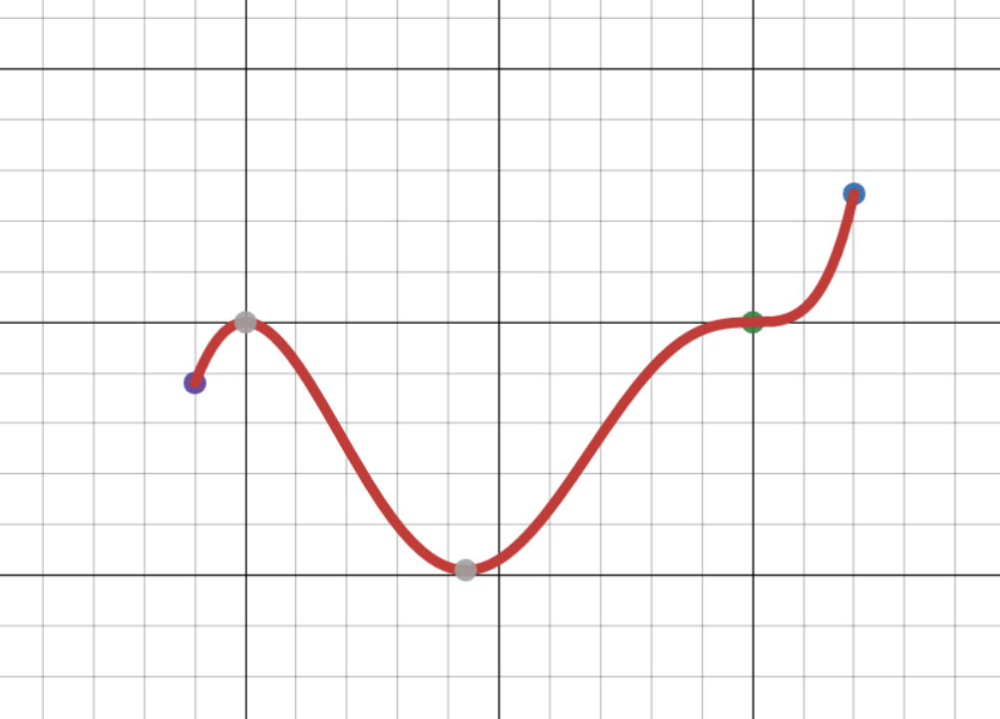
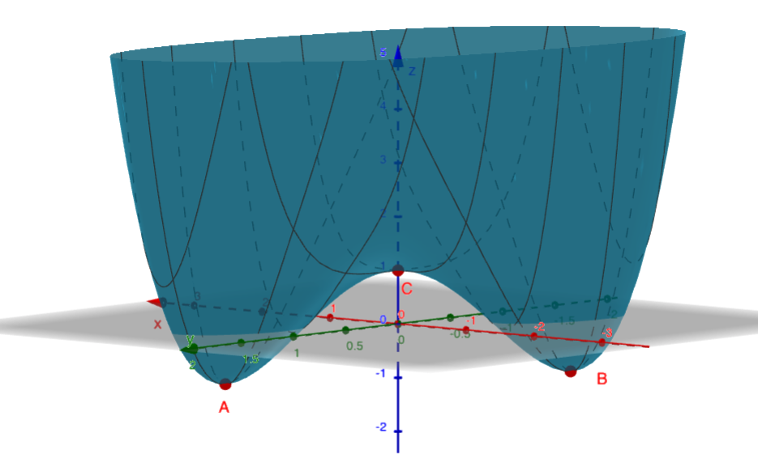
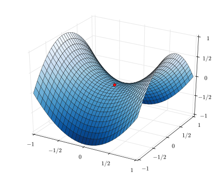
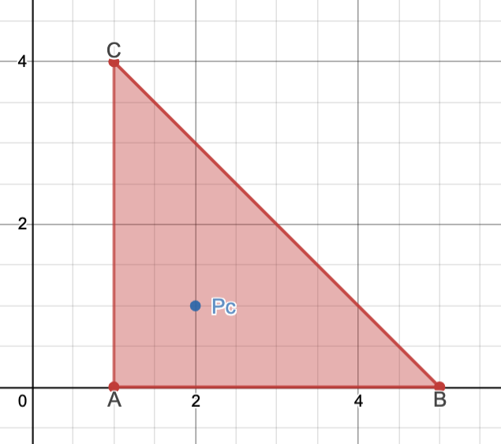

Section 5.1 Extremums
¶Outils 5.1.1.
Calculatrice à zéros pour le gradient d'une fonction de deux variables :
Application GeoGebra illustrant graphiquement le test des dérivées secondes pour une fonction de deux variables.
Exemple de calcul de minimum absolu avec WolframAlpha.
Objectifs
-
Connaître le théorème suivant : si \(f(x,y)\) admet un minimum local ou un maximum local en \((x_0,y_0)\) et si le gradient existe en ce point, alors
\begin{equation*} \nabla f(x_0,y_0)=\vec{0}. \end{equation*} -
Connaître la définition de point critique pour une fonction de plusieurs variables, et savoir dresser la liste de tous les points critiques d'une fonction
par la lecture d'un diagramme de courbes de niveau,
en observant le graphe,
ou en déterminant le domaine et les zéros du gradient.
Savoir déterminer la nature d'un point critique (point de minimum local, de maximum local, ou point de selle) graphiquement, ainsi qu'à l'aide du test des dérivées secondes.
-
Savoir déterminer le maximum et le minimum absolus d'une fonction \(f(x,y)\) continue sur un ensemble fermé et borné \(D\) de \(\mathbb{R}^2\) tel qu'un triangle ou un rectangle en appliquant la procédure suivante :
Calculer \(f(P_c)\) pour tous les points critiques \(P_c\) de \(f\) qui se trouvent à l'intérieur de \(D\text{.}\)
Déterminer les extremums de \(f\) sur la frontière de \(D\) en se ramenant à une variable par paramétrisation de la frontière.
Le maximum (resp. minimum) absolu de \(f\) sur \(D\) est la plus grande (resp. petite) des valeurs trouvées aux étapes 1. et 2.
Exercice 5.1.1.
Le but de cet exercice est de réviser certains des concepts liés à l'optimisation rencontrés dans un cours de calcul différentiel à une variable.
Quelle est la nature des points critiques identifiés dans le graphique qui suit?
-
On s'intéresse à la fonction
\begin{equation*} f(x)=\frac{1}{4}x^4-\frac{7}{3}x^3+\frac{15}{2}x^2-9x. \end{equation*}Donnez la liste des points critiques de cette fonction.
Quelles informations peut-on tirer du test de la dérivée seconde?
Dressez le tableau de variations de \(f\) relatif à \(f'\) sur \([0,4]\) et déduisez-en les extremums absolus de \(f\) sur cet intervalle.
-
Retrouvez les résultats de la question précédente en appliquant la procédure qui suit.
Calculer \(f(c)\) pour tout point critique \(c\) de \(f\) situé à l'intérieur de l'intervalle \([0,4]\text{.}\)
Calculer \(f(b)\) pour chacune des bornes \(b\) de l'intervalle \([0,4]\text{.}\)
Le maximum (resp. minimum) absolu de \(f\) sur \([0,4]\) est la plus grande (resp. petite) valeur trouvées aux étapes précédentes.
-
De gauche à droite, les cinq points critiques identifiés sur ce graphique
sont des pointsde minimum local,
de maximum local,
de minimum absolu,
d'inflexion,
et de maximum absolu.
-
Notons tout de suite que les dérivées première et seconde de la fonction
\begin{equation*} f(x)=\frac{1}{4}x^4-\frac{7}{3}x^3+\frac{15}{2}x^2-9x \end{equation*}sont
\begin{equation*} f'(x)=x^3-7x^2+15x-9 \end{equation*}et
\begin{equation*} f''(x)=3x^2-14x+15. \end{equation*}-
Comme \(f\) est dérivable partout, les points critiques de \(f\) sont précisément les zéros de \(f'\text{.}\) On va donc factoriser ce polynôme.
D'abord, on remarque que
\begin{equation*} f'(1)=1-7+15-9=0 \end{equation*}donc \(f'(x)\) est divisible par \(x-1\text{.}\)
En divisant \(f'(x)\) par \(x-1\text{,}\) puis en factorisant le quotient, on obtient
\begin{align*} f'(x)&=x^3-7x^2+15x-9\\ &=(x-1)(x^2-6x+9)\\ &=(x-1)(x-3)^2. \end{align*}Les points critiques de \(f\) sont donc
\begin{equation*} 1\quad\text{et}\quad 3. \end{equation*} -
Au point critique \(x=1\text{,}\) on a
\begin{align*} f''(1)&=3\cdot 1^2-14\cdot 1+15\\ &=3-14+15\\ &=4\\ &>0 \end{align*}donc c'est un point de minimum local.
-
Au point critique \(x=3\text{,}\) on a
\begin{align*} f''(3)&=3\cdot3^2-14\cdot 3+15\\ &=27-42+15\\ &=0 \end{align*}donc on ne peut rien conclure.
-
-
Voici le tableau de variations de \(f\) relatif à \(f'\) sur \([0,4]\) :
\begin{equation*} \begin{array}{c|ccccc} x&0&&1&&3&&4\\ \hline f'(x)&\not\exists&-&0&+&0&+&\not\exists\\ \hline f(x)&0&\searrow&-43/12&\nearrow&-9/4&\nearrow&-4/3 \end{array} \end{equation*}On en déduit que
le maximum absolu vaut \(0\) et est réalisé à la borne \(b=0\text{,}\)
et le minimum absolu vaut \(-43/12\) et est réalisé au point critique \(c=1\text{.}\)
-
Appliquons la procédure indiquée.
-
Aux points critiques \(c=1\) et \(c=3\text{,}\) on a
\begin{equation*} f(1)=-\frac{43}{12}\approx -3{,}58\quad\text{et}\quad f(3)=-2{,}25. \end{equation*} -
Aux bornes \(b=0\) et \(b=4\text{,}\) on a
\begin{equation*} f(0)=0\quad\text{et}\quad f(4)=-\frac{4}{3}\approx-1{,}33. \end{equation*} -
On retrouve bien que
le maximum absolu vaut \(0\) et est réalisé à la borne \(b=0\text{,}\)
et le minimum absolu vaut \(-43/12\) et est réalisé au point critique \(c=1\text{.}\)
-
-
Exercice 5.1.2.
Quelle est la nature de chacun des points critiques identifiés sur les graphes suivants :
- 
- 
Les points A et B sont des points de minimum relatifs (et très probablement absolus), tandis que le point C est un point de selle.
Le point identifié est un point de selle.
Exercice 5.1.3.
Où sont les points critiques dans ce diagramme de courbes de niveau
On détecte deux points critiques :
\((1,1)\) qui correspond à un minimum local;
\((0,0)\) qui correspond à un point de selle.
Exercice 5.1.4.
Soit \((3,4)\) un point critique d'une fonction ayant des dérivées secondes continues.
Quelle information pouvez-vous tirer du test des dérivées secondes dans chacun des cas suivants?
\(f_{xx}(3,4)=-1,\quad f_{xy}(3,4)=6,\quad f_{yy}(3,4)=1\text{.}\)
\(f_{xx}(3,4)=8,\quad f_{xy}(3,4)=-2,\quad f_{yy}(3,4)=1\text{.}\)
\(f_{xx}(3,4)=-8,\quad f_{xy}(3,4)=2,\quad f_{yy}(3,4)=-1\text{.}\)
\(f_{xx}(3,4)=9,\quad f_{xy}(3,4)=6,\quad f_{yy}(3,4)=4\text{.}\)
Le point \((3,4)\) est un point de selle.
Le point \((3,4)\) donne un minimum local.
Le point \((3,4)\) donne un maximum local.
On ne peut rien conclure quant à la nature du point \((3,4)\) par le seul test des dérivées secondes..
-
Si \(f_{xx}(3,4)=-1,\;f_{xy}(3,4)=6,\;f_{yy}(3,4)=1\text{,}\) alors
\begin{equation*} \alpha_2=\begin{vmatrix}f_{xx}&f_{xy}\\f_{yx}&f_{yy}\end{vmatrix}=\begin{vmatrix}-1&6\\6&1\end{vmatrix}=-1-36=-37<0 \end{equation*}donc \((3,4)\) est un point de selle.
-
Si \(f_{xx}(3,4)=8,\;f_{xy}(3,4)=-2,\;f_{yy}(3,4)=1\text{,}\) alors
\begin{equation*} \alpha_2=\begin{vmatrix}f_{xx}&f_{xy}\\f_{yx}&f_{yy}\end{vmatrix}=\begin{vmatrix}8&-2\\-2&1\end{vmatrix}=8\cdot 1-(-2)(-2)=4>0 \end{equation*}et
\begin{equation*} \alpha_1=f_{xx}=8>0 \end{equation*}donc \((3,4)\) donne un minimum local.
-
Si \(f_{xx}(3,4)=-8,\;f_{xy}(3,4)=2,\;f_{yy}(3,4)=-1\text{,}\) alors
\begin{equation*} \alpha_2=\begin{vmatrix}f_{xx}&f_{xy}\\f_{yx}&f_{yy}\end{vmatrix}=\begin{vmatrix}-8&2\\2&-1\end{vmatrix}=(-8)\cdot(-1)-2\cdot 2=4>0 \end{equation*}et
\begin{equation*} \alpha_1=f_{xx}=-8>0 \end{equation*}donc \((3,4)\) donne un maximum local.
-
Si \(f_{xx}(3,4)=9,\;f_{xy}(3,4)=6,\;f_{yy}(3,4)=4\text{,}\) alors
\begin{equation*} \alpha_2=\begin{vmatrix}f_{xx}&f_{xy}\\f_{yx}&f_{yy}\end{vmatrix}=\begin{vmatrix}9&6\\6&4\end{vmatrix}=9\cdot 4-6\cdot 6=0 \end{equation*}donc on ne peut rien conclure.
Exercice 5.1.5.
Trouvez les extremums locaux et les points de selle de la fonction
Déterminez les points critiques en résolvant l'équation
Puis déterminez leur nature à l'aide du test des dérivées secondes.
Il y a
un maximum local au point \((-1,-1)\text{,}\)
un minimum local au point \((1,1)\text{,}\)
et deux points de selle aux points \((1,-1)\) et \((-1,1)\text{.}\)
Commençons par chercher les zéros du gradient :
Comme le gradient existe en tout point de \(\mathbb{R}^2\text{,}\) il n'y a pas d'autre point critique à ajouter aux quatre zéros du gradient trouvés :
Préparons-nous à appliquer le test des dérivées secondes en calculant ces dernières :
On a donc
et
en tout point \((x,y)\in\mathbb{R}^2\text{.}\)
-
Au point \((1,1)\text{,}\) on a
\begin{equation*} \alpha_2=36\cdot 1\cdot 1=36>0\quad\text{et}\quad\alpha_1=6\cdot 1=6>0 \end{equation*}donc \(f\) possède un minimum local.
-
Au point \((-1,-1)\text{,}\) on a
\begin{equation*} \alpha_2=36\cdot(-1)\cdot(-1)=36>0\quad\text{et}\quad\alpha_1=6\cdot(-1)=-6<0 \end{equation*}donc \(f\) possède un maximum local.
-
Au point \((1,-1)\text{,}\) on a
\begin{equation*} \alpha_2=36\cdot 1\cdot(-1)=-36<0 \end{equation*}donc \(f\) possède un point de selle.
-
Au point \((-1,1)\text{,}\) on a
\begin{equation*} \alpha_2=36\cdot(-1)\cdot 1=-36<0 \end{equation*}donc \(f\) possède un point de selle.
Exercice 5.1.6.
On s'intéresse à la fonction de deux variables
Trouvez le maximum et le minimum absolus de cette fonction sur la région triangulaire fermée de sommets
Appliquez la procédure en trois étapes décrite au dernier point des objectifs.
Le maximum absolu vaut \(2\) et le minimum absolu \(-2\text{.}\)
-
Commençons par déterminer les zéros du gradient
\begin{align*} \nabla f=\vec{0}&\quad\Leftrightarrow\quad\begin{cases}f_x=0\\f_y=0\end{cases}\\ &\quad\Leftrightarrow\quad\begin{cases}y-1=0\\x-2=0\end{cases}\\ &\quad\Leftrightarrow\quad\begin{cases}y=1\\x=2\end{cases}. \end{align*}Comme \(\nabla f\) existe en tout point de \(\mathbb{R}^2\text{,}\) il n'y a pas d'autres points critiques. De plus, le point
\begin{equation*} P_c=(2,1) \end{equation*}est situé à l'intérieur du triangle \(ABC\)
On retient donc la valeur\begin{equation*} f(P_c)=f(2,1)=3+2\cdot 1-2-2\cdot 1=1. \end{equation*} -
La frontière du triangle \(ABC\) est constituée des trois segments \([A,B], [B,C]\) et \([C,A]\text{.}\)
-
Extremums de \(f\) sur \([A,B]\) : On peut paramétrer ce segment par
\begin{equation*} 1\leq x\leq 5\quad\text{et}\quad y=0 \end{equation*}donc on cherche les extremums de la fonction
\begin{align*} f_1(x)&=f(x,0)\\ &=3+x\cdot 0-x-2\cdot 0\\ &=3-x \end{align*}pour \(x\in[1,5]\text{.}\)
Comme cette fonction est décroissante, on a
\begin{equation*} \max_{[A,B]}f=\max_{[1,5]}f_1=f_1(1)=3-1=2 \end{equation*}et
\begin{equation*} \min_{[A,B]}f=\min_{[1,5]}f_1=f_1(5)=3-5=-2. \end{equation*} -
Extremums de \(f\) sur \([B,C]\) : On peut paramétrer ce segment par
\begin{equation*} 1\leq x\leq 5\quad\text{et}\quad y=5-x \end{equation*}donc on cherche les extremums de la fonction
\begin{align*} f_2(x)&=f(x,5-x)\\ &=3+x\cdot(5-x)-x-2\cdot(5-x)\\ &=3+5x-x^2-x-10+2x\\ &=-x^2+6x-7 \end{align*}pour \(x\in[1,5]\text{.}\)
Voici le tableau de variations de cette fonction relativement à sa dérivée :
\begin{equation*} \begin{array}{c|ccccc} x&1&&3&&5\\ \hline f_2'(x)=-2x+6&&+&0&-&\\ \hline f_2(x)=-x^2+6x-7&-2&\nearrow&2&\searrow&-2 \end{array} \end{equation*}On en déduit que
\begin{equation*} \max_{[B,C]}f=\max_{[1,5]}f_2=2 \end{equation*}et
\begin{equation*} \min_{[B,C]}f=\min_{[1,5]}f_2=-2. \end{equation*} -
Extremums de \(f\) sur \([C,A]\) : On peut paramétrer ce segment par
\begin{equation*} x=1\quad\text{et}\quad 0\leq y\leq 4 \end{equation*}donc on cherche les extremums de la fonction
\begin{align*} f_3(y)&=f(1,y)\\ &=3+1\cdot y-1-2y\\ &=2-y \end{align*}pour \(y\in[0,4]\text{.}\)
Comme cette fonction est décroissante, on a
\begin{equation*} \max_{[C,A]}f=\max_{[0,4]}f_3=f_2(0)=2-0=2 \end{equation*}et
\begin{equation*} \min_{[C,A]}f=\min_{[0,4]}f_3=f_2(4)=2-4=-2. \end{equation*}
-
-
À l'étape 1. est apparue la valeur
\begin{equation*} 1. \end{equation*}À l'étape 2. sont apparues les valeurs
\begin{equation*} -2\quad\text{et}\quad 2. \end{equation*}Par conséquent, on a
\begin{equation*} \max_Df=2\quad\text{et}\quad\min_Df=-2. \end{equation*}
Exercice 5.1.7.
Trouvez le point du plan d'équation
qui est le plus proche du point
Géométriquement, il est clair qu'un tel point existe et qu'il est unique. C'est la projection orthogonale de \(P(0,1,1)\) sur le plan.
Voici deux options.
Vous pouvez l'obtenir comme intersection du plan avec la droite normale au plan passant par \(P\text{.}\)
-
Ou vous pouvez transformer la question en un problème d'optimisation pour la fonction de deux variables calculant (le carré de) la distance entre le point \(P\) et le point
\begin{equation*} Q(6+2y-3z,y,z) \end{equation*}qui parcourt le plan lorsque \((y,z)\) décrit \(\mathbb{R}^2\text{.}\)
Cette fonction est différentiable partout, elle n'admet pas de maximum local. Le point cherché donne un minimum global et ce sera le seul point critique.
Il s'agit du point
De l'équation cartésienne \(x-2y+3z=6\) on tire un vecteur normal au plan
qui nous permet de donner des équations paramétriques de la droite normale au plan passant par \(P(0,1,1)\) :
soit
On susbstitue ensuite dans l'équation du plan afin de trouver la valeur de \(t\) correspondant au point d'intersection :
Finalement, on a
qui donne le point
En isolant \(x\) dans l'équation du plan
on voit que tout point du plan peut s'écrire
Considérons donc la fonction
et déterminons les zéros de son gradient. On a
ce qui conduit au système linéaire
dont la solution est donnée par la règle de Cramer :
Enfin, cela donne
Le point cherché est donc
Si vous souhaitez en faire plus ou disposer de plus d'exemples, vous pouvez consulter les exercices 2, 4, 6, 12, 32, 34, 42 dont voici les solutions.
Sinon, passez directement aux exercices prioritaires de cette section.
Remarque : Voici le document distribué les sessions précédentes. Et en voilà le solutionnaire.